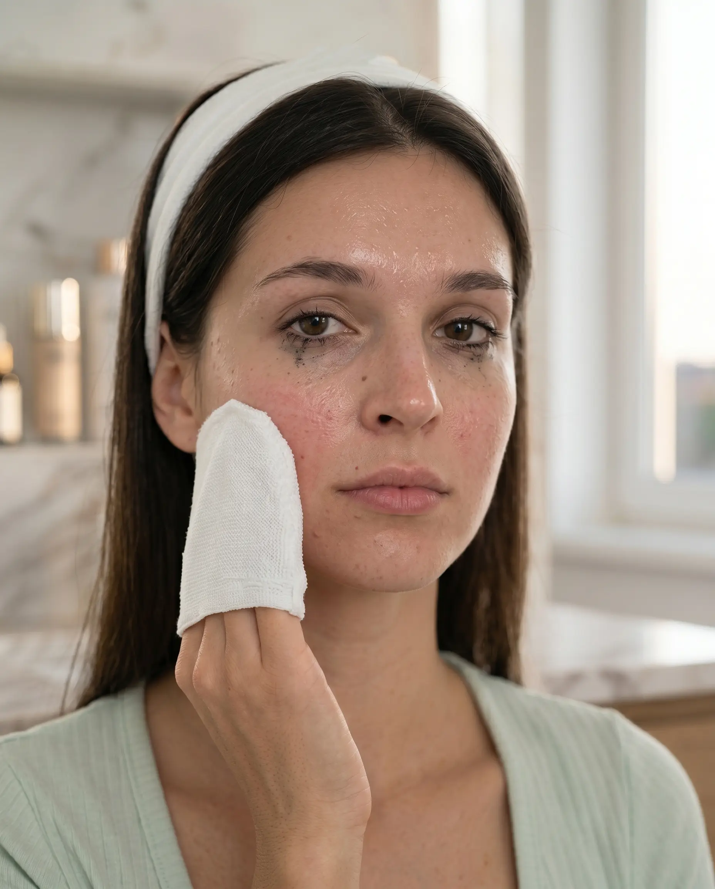
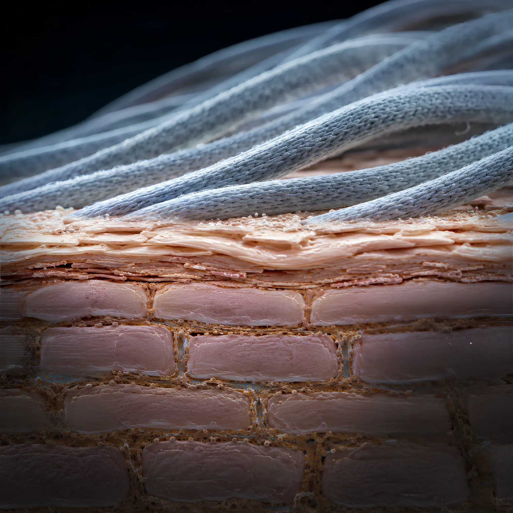
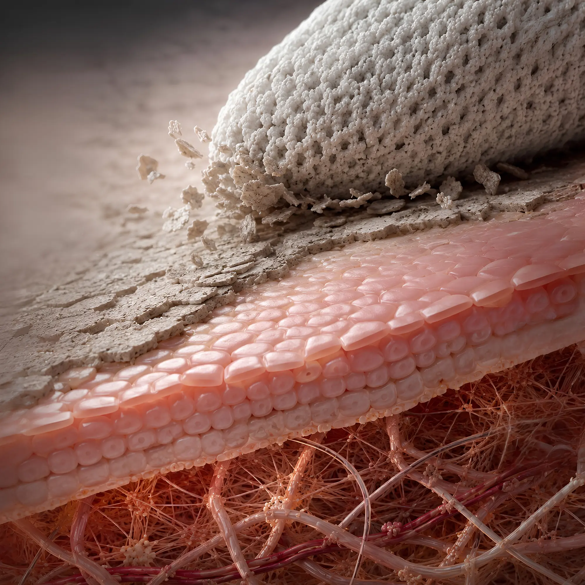
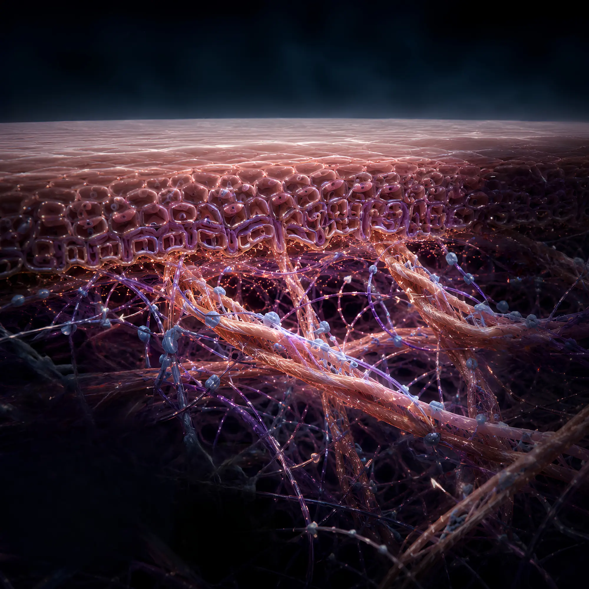
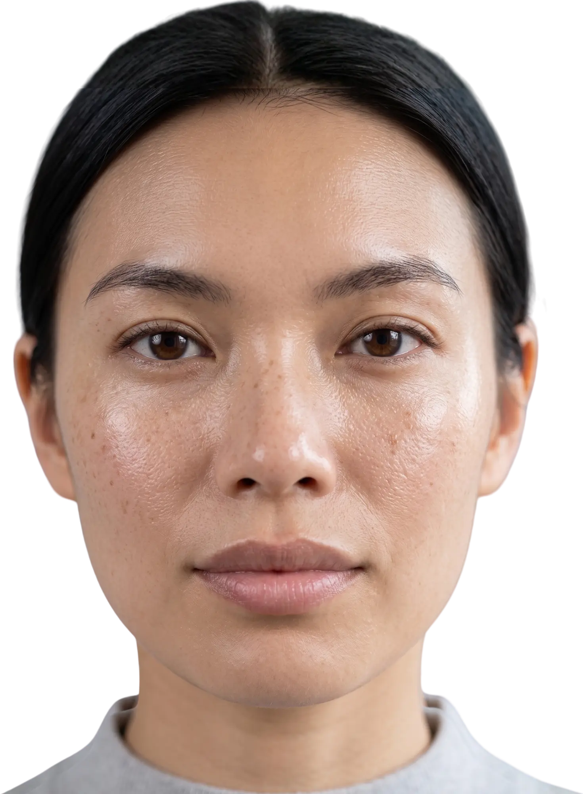
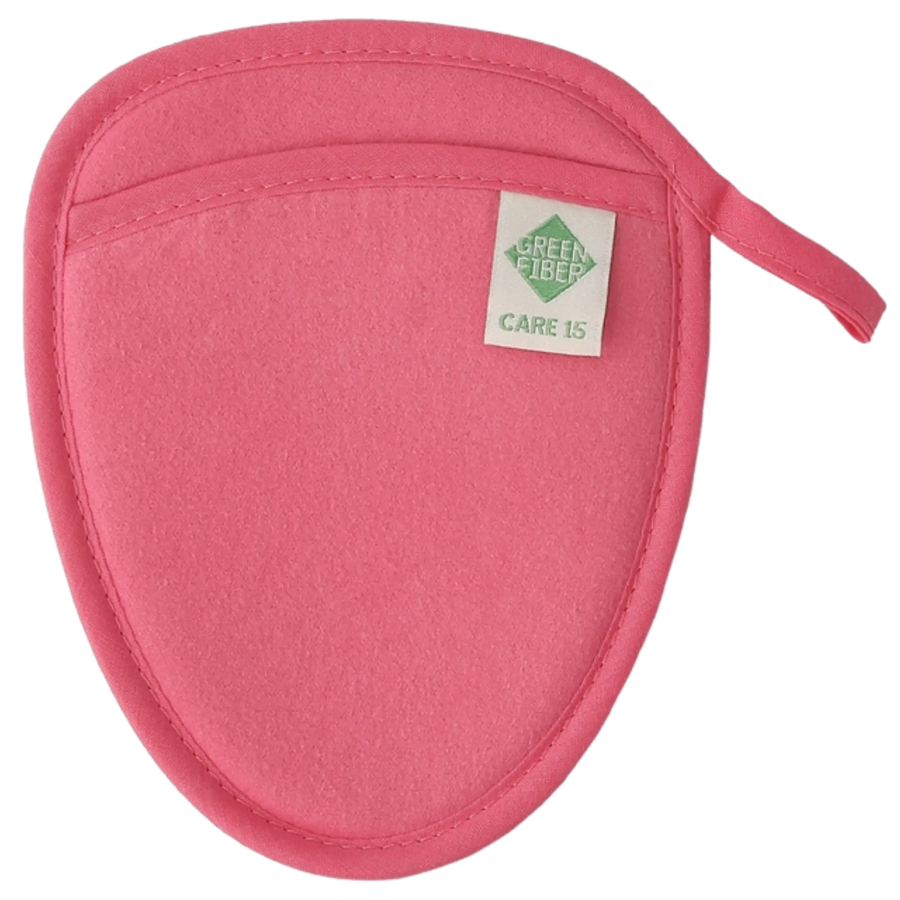

¿Cansada de gastar una fortuna?
Discos de algodón, toallitas desechables, desmaquillantes líquidos… cada mes sumás gastos que se van a la basura.
Discos de algodón, toallitas desechables, desmaquillantes líquidos… cada mes sumás gastos que se van a la basura.
Los químicos agresivos de los desmaquillantes irritan tu barrera cutánea, dejándote la piel seca y sensible.
Toallita, agua micelar, algodón, enjuague, crema… Demasiados pasos que consumen tu tiempo y energía.
Elimina maquillaje, sebo e impurezas utilizando solo agua, sin necesidad de productos químicos adicionales.
Su tecnología japonesa captura la suciedad gracias al efecto capilar de sus fibras.

Apta para todo tipo de pieles y edades, limpia sin irritar ni resecar.
Reutilizable hasta por 2 años, ayudando a ahorrar dinero y reducir residuos.
Máxima practicidad. Todo lo que tu piel necesita cabe en tu bolso para llevarlo a cualquier lugar. Limpia, exfolia y desmaquilla usando solo agua.
Esponja compacta ideal para desmaquillado suave.
Guante doble cara para limpieza y exfoliación 2 en 1.
Manopla ultra delicada para cuidar las zonas más sensibles.
“La ciencia detrás de una limpieza profunda sin dañar tu barrera celular. Una verdadera inversión dermatológica.”

Al no usar tensoactivos químicos, se mantiene intacta la película hidrolipídica de la piel y su pH natural, protegiendo las bacterias beneficiosas que evitan el acné y la irritación.
Sus microfibras atrapan las partículas mediante fuerzas físicas de Van der Waals sin necesidad de fricción abrasiva, previniendo los micro-desgarros epidérmicos.
La estructura ultra-fina del tejido atrae eficientemente las moléculas de sebo y los restos de maquillaje atrapados dentro del folículo, oxigenando los poros.

La cara suave, a través del masaje táctil, reactiva el flujo sanguíneo de los capilares periféricos, aumentando el aporte de oxígeno y nutrientes a las células para un "glow" biológico.
La cara texturizada rompe mecánicamente de forma suave los enlaces que unen los corneocitos muertos (desmosomas), facilitando su desprendimiento sin inducir inflamación subclínica.
La remoción constante de la capa córnea superficial engaña a la piel, obligándola a acelerar el ciclo de renovación celular y estimulando a los fibroblastos a producir más colágeno.

La piel del cuello y escote tiene menos glándulas sebáceas. Esta textura ultra-fina limpia a profundidad sin arrastrar los escasos lípidos protectores de esta zona altamente vulnerable.
Su estructura permite atrapar micropartículas de contaminación ambiental, previniendo la formación de radicales libres que causan estrés oxidativo profundo a nivel celular.
Al eliminar diariamente los agentes oxidantes, previene el proceso de glicación y la degradación prematura de la elastina, manteniendo la tensegridad y firmeza de la piel.
La tecnología de microfibra UpPoly elimina los tensioactivos y químicos abrasivos, previniendo la comedogénesis y respetando el manto hidrolipídico. Un principio validado por líderes mundiales en microbioma cutáneo y dermatología clínica.

Inmunidad Epidérmica
Pionero en el microbioma cutáneo. Sus investigaciones demuestran cómo la ausencia de químicos agresivos protege al organismo contra patógenos dérmicos.
Ver Lab UCSD
Homeostasis de la Barrera
Galardonado por sus estudios sobre la hidratación del estrato córneo y los mecanismos fisiopatológicos de la piel seca sensible.
Universidad de Kyoto
Dermatología Clínica
Valida en la práctica médica el impacto positivo de rutinas libres de abrasivos sobre el manto ácido y la hidratación natural.
MP 2455 · MN 73735 Doctoralia Argentina
Dermatología Avanzada
Referente en la Sechenov University, especializada en protocolos no invasivos para la integridad estructural de la barrera dérmica.
Sechenov University
Transparencia E-E-A-T: Las referencias a investigadores y sus instituciones son informativas y enlazan a sus perfiles públicos y laboratorios verificados. Ningún experto avala comercialmente este producto. Los enlaces usan rel="nofollow noopener" para cumplir con las directrices de Google sobre enlaces de terceros.

Protege tu barrera cutánea y previene arrugas prematuras al limpiar profundamente sin estirar la piel.
Barre suavemente las células muertas para revelar al instante una piel más luminosa, joven y con tono uniforme.
La micro-exfoliación diaria estimula el tejido, previniendo la flacidez y la pérdida de firmeza frente al paso del tiempo.
Envío disponible · Pago seguro · Devolución garantizada
Así se ve la remoción de maquillaje sin químicos en la vida real. Contenido sin filtros de clientas verificadas experimentando la tecnología UpPoly por primera vez.
Tocá cada sello para ver qué garantiza y cómo aplica al Laska Mini Set y la tecnología UpPoly.
Garantiza que cada componente del Laska Mini Set — incluyendo los paños de microfibra UpPoly — fue analizado para detectar más de 100 sustancias dañinas. Cero químicos residuales en contacto con tu piel.
Aplica a estos productos
Referente en la cobertura de J-Beauty y tendencias de skincare asiático. La tecnología UpPoly se alinea con el movimiento japonés de limpieza suave sin agentes químicos.
Relevante para

Impuestos incluidos.
Limpieza facial profunda, suave y radiante. Sin irritaciones, sin tirantez y sin complicaciones.
La línea CARE ha sido diseñada para transformar tu rutina de limpieza facial mediante accesorios reutilizables que eliminan el maquillaje y las impurezas usando únicamente agua tibia.
Una alternativa práctica, suave y sostenible que respeta tu piel mientras te ayuda a mantener un aspecto fresco, limpio y saludable todos los días.
El set Laska Mini incluye 3 herramientas esenciales (CARE 4, CARE 15 y CARE 6) para una limpieza facial profunda, suave y radiante, reemplazando el uso de químicos y toallitas desechables.
Incluye:
1 Esponja desmaquillante (CARE 4)
1 Guante doble cara (CARE 15)
1 Manopla suave (CARE 6)
Material: Microfibra UpPoly de alta tecnología.
📦 Envíos: Realizamos envíos a todo el país. Tu pedido será preparado en 24-48 horas hábiles y el tiempo de entrega estimado es de 3 a 7 días hábiles según tu ubicación.
🔄 Devoluciones: Queremos que estés 100% satisfecha. Tenés hasta 30 días desde la recepción para solicitar una devolución si el producto presenta fallas de fábrica. Como se trata de un producto de higiene personal, el mismo debe estar sin uso para poder ser devuelto.
💬 ¿Dudas? Escribinos y te ayudamos con tu compra.
Después de cada uso, lavá tu producto CARE con jabón neutro (blanco) y agua tibia. Frotá suavemente con las manos, enjuagá bien y dejá secar al aire libre. No uses suavizante ni blanqueador, ya que pueden dañar las microfibras. Con este cuidado simple, mantendrás su efectividad durante toda su vida útil.
¡Sí! Es justamente ideal para pieles sensibles, con acné o rosácea. Al limpiar solo con agua y sin necesidad de químicos, no irritás ni alterás tu barrera cutánea. La microfibra UpPoly trabaja de forma mecánica ultra-suave, sin agregar sustancias que puedan provocar brotes o enrojecimiento.
Sí. Con el cuidado adecuado (lavado con jabón neutro y secado al aire), las fibras UpPoly mantienen sus propiedades de limpieza durante más de 500 lavados, lo que equivale a aproximadamente 2 años de uso diario. Esto lo convierte en una inversión que te ahorra miles de pesos en productos desechables.
Sí. La tecnología de microfibra UpPoly captura eficazmente incluso el maquillaje de larga duración y waterproof, como máscaras de pestañas resistentes al agua. Solo necesitás humedecer la fibra con agua tibia y deslizar suavemente sobre el rostro. Sin frotar, sin irritar.
Absolutamente. El set Laska Mini es apto para pieles secas, grasas, mixtas, sensibles y maduras. Al no utilizar químicos, se adapta a cualquier tipo de piel sin causar reacciones adversas. Incluso es seguro para adolescentes que están comenzando su rutina de cuidado facial.
Nuestra filosofía se basa en el respeto absoluto por el microbioma humano y el ecosistema global. Desarrollamos la tecnología UpPoly para eliminar la dependencia de surfactantes químicos agresivos y plásticos de un solo uso en la industria cosmética.
Email: soporte@pepagold.com.ar
WhatsApp: +54 9 11 1234-5678
Horario: Lun-Vie 9:00 a 18:00 hrs
PepaGold - Representante Autorizado Greenway Global
Sede Central: Av. del Libertador 1000, Buenos Aires, Argentina
CUIT: 30-71123456-8